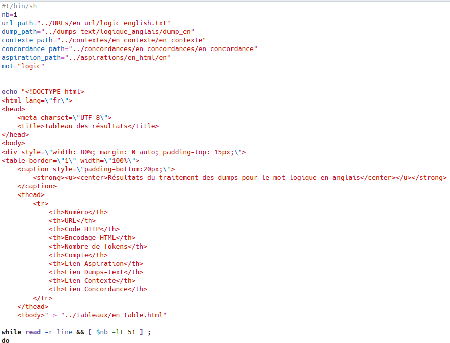
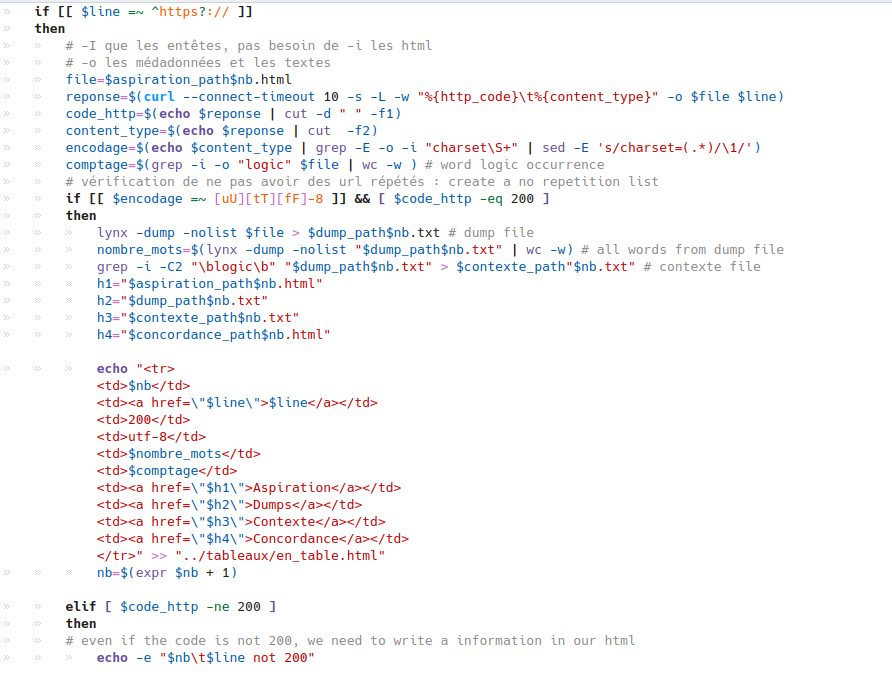
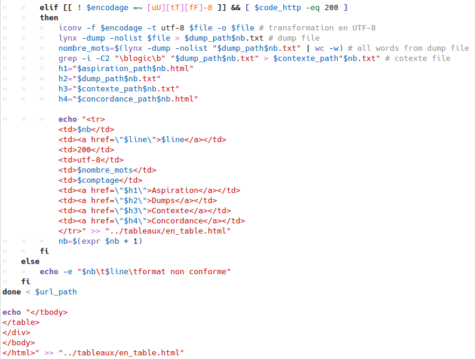

Le but de nos scripts est d'être capable de prendre le fichier en entrée qui contient les urls.
Avec la commande curl, on récupère d'abord le code html et récupère les résultats avec la commande lynx. Mais avant d'utiliser lynx, on vérifie s'ils sont bien 200 ou pas, car on ne traite que les url dont le code html est 200. Ensuite on examine aussi l'encodage s'il est utf-8 ou pas, pour les url de 200 ayant un encodage non utf-8, on va le transformer en utf-8 avec la commande iconv. Puis avec lynx on stocker les informations textuelles dans le dossier dumps-text sur lequel on appliquera le comptage de notre mot étudié, le contexte avec la commande grep.
Et on peut choisir de calculer la concordance avec un autre script. À la fin, le script principal va donner un tableaux de 10 colonnes : Numéro urls code_http Encodqge tokens occurence lien_aspiration lien_dumps lien_contexte et lien_concordance
  